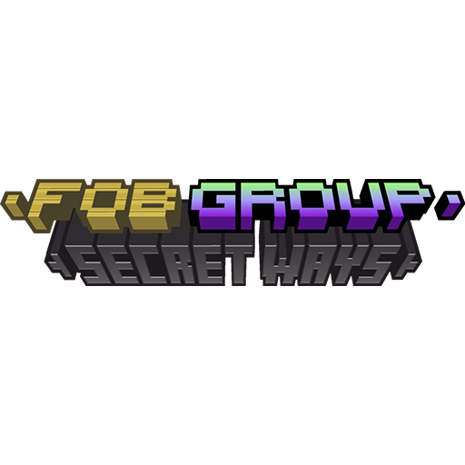

Découvrez Secret Ways
Une création de FOB Group par GameCraft
A propos de Secret Ways
Secret Ways est un mod Minecraft développer par GameCraft est fait donc partie du FOB Group, en prenant la troisième place des mods créer dans le FOB Group, après FOB et FOB Reborn. Le but du mod: Rajouter des blocs invisbles ou qui se fondent dans le décor pour aider a faire des passages secrets ou même a espionné des joueurs à l'aide des blocs a face transparente.